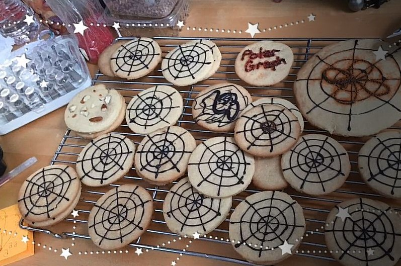

Polar Graph equations are 2D coordinate system in which each point is determined by a distance and angle. The outline of a graph looks a little like a spider web, and spider web cookies are really cute. So I made polar graph cookies and placed an equation on one of them. The equation I chose was r=4cos(2 θ). it's the top right cookie
This is a multiplayer board game that incoporates concepts on Taylor Series from La Grange Error bound to power series. The main objective of this game is to unlock as many scrolls as possible. To get the scrolls, one must take turn drawing a card from the top of the Sigma. One must answer the question correctly on an index card and compare it to the answer inside the flap. If the answer is correct, you get to put a locked scroll on the side of the Sigma where it travels through the magical tunnel to unlock the scroll. Sometimes it doesn't make it out, while other times it does. Your goal is to unlock as many scrolls as possible.